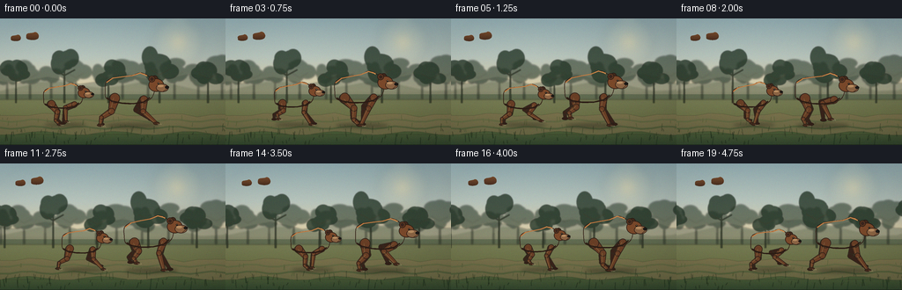
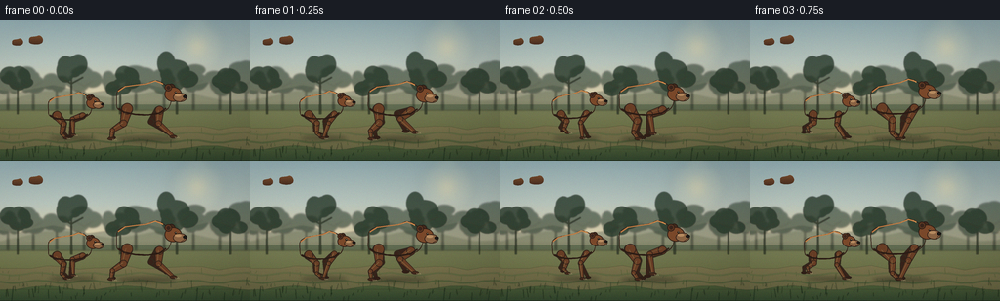
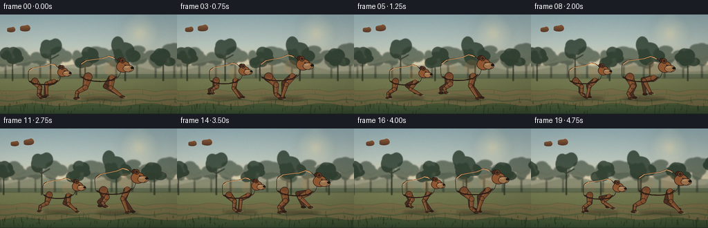
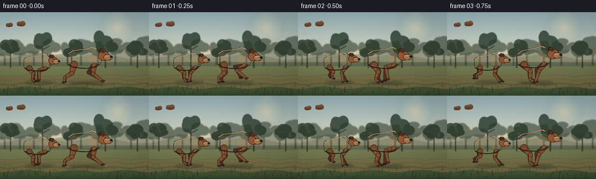
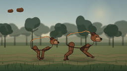
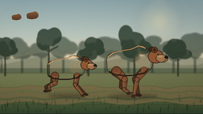
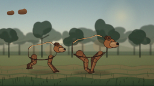
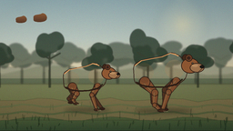

CODING AGENTS AS PIXEL WORLD MODELS
traex/DeepSeek-V4.1-Flash · instance_preservation_0013
点击播放 · 原生 RGB 像素
逐轮保存的候选
回放视频、检查图与代码变化。
每份候选均可单独播放。实际图片检查记录在下方工具轨迹中。
候选 01播放与检查图
点击播放 · 原生 RGB 像素


展开代码变化
--- 上一保存版本
+++ 本次保存版本
@@ -0,0 +1,744 @@
+from __future__ import annotations
+
+import math
+import random
+from pathlib import Path
+
+import numpy as np
+from PIL import Image, ImageChops, ImageDraw, ImageFilter
+
+import artifact_io
+
+
+W, H = 256, 144
+N = 20
+FPS = 4
+S = 4
+TAU = math.tau
+CASE_DIR = Path(__file__).resolve().parent
+
+
+def rgb(value: str) -> tuple[int, int, int]:
+ value = value.lstrip("#")
+ return tuple(int(value[i : i + 2], 16) for i in (0, 2, 4))
+
+
+def rgba(value: str, alpha: int) -> tuple[int, int, int, int]:
+ return (*rgb(value), alpha)
+
+
+def scaled(point: tuple[float, float]) -> tuple[int, int]:
+ return round(point[0] * S), round(point[1] * S)
+
+
+def catmull_rom(points: list[tuple[float, float]], steps: int = 10) -> list[tuple[float, float]]:
+ result: list[tuple[float, float]] = []
+ count = len(points)
+ for i in range(count):
+ p0 = points[(i - 1) % count]
+ p1 = points[i]
+ p2 = points[(i + 1) % count]
+ p3 = points[(i + 2) % count]
+ for step in range(steps):
+ t = step / steps
+ t2 = t * t
+ t3 = t2 * t
+ x = 0.5 * (
+ 2 * p1[0]
+ + (-p0[0] + p2[0]) * t
+ + (2 * p0[0] - 5 * p1[0] + 4 * p2[0] - p3[0]) * t2
+ + (-p0[0] + 3 * p1[0] - 3 * p2[0] + p3[0]) * t3
+ )
+ y = 0.5 * (
+ 2 * p1[1]
+ + (-p0[1] + p2[1]) * t
+ + (2 * p0[1] - 5 * p1[1] + 4 * p2[1] - p3[1]) * t2
+ + (-p0[1] + 3 * p1[1] - 3 * p2[1] + p3[1]) * t3
+ )
+ result.append((x, y))
+ return result
+
+
+def gradient_background() -> Image.Image:
+ height = H * S
+ width = W * S
+ y = np.linspace(0.0, 1.0, height, dtype=np.float32)
+ pixels = np.zeros((height, width, 3), dtype=np.float32)
+
+ sky_stops = [
+ (0.00, np.array(rgb("#91aeb6"), dtype=np.float32)),
+ (0.30, np.array(rgb("#b8c8c2"), dtype=np.float32)),
+ (0.57, np.array(rgb("#dfd3ad"), dtype=np.float32)),
+ (0.64, np.array(rgb("#b7a77f"), dtype=np.float32)),
+ ]
+ ground_stops = [
+ (0.60, np.array(rgb("#78805a"), dtype=np.float32)),
+ (0.76, np.array(rgb("#6d744b"), dtype=np.float32)),
+ (0.90, np.array(rgb("#495b38"), dtype=np.float32)),
+ (1.00, np.array(rgb("#31452e"), dtype=np.float32)),
+ ]
+
+ for stop_index in range(len(sky_stops) - 1):
+ y0, c0 = sky_stops[stop_index]
+ y1, c1 = sky_stops[stop_index + 1]
+ mask = (y >= y0) & (y < y1)
+ blend = (y[mask] - y0) / (y1 - y0)
+ pixels[mask] = c0[None, None, :] * (1.0 - blend[:, None, None]) + c1[None, None, :] * blend[:, None, None]
+
+ for stop_index in range(len(ground_stops) - 1):
+ y0, c0 = ground_stops[stop_index]
+ y1, c1 = ground_stops[stop_index + 1]
+ mask = (y >= y0) & (y < y1)
+ blend = (y[mask] - y0) / (y1 - y0)
+ pixels[mask] = c0[None, None, :] * (1.0 - blend[:, None, None]) + c1[None, None, :] * blend[:, None, None]
+
+ x = np.linspace(0.0, 1.0, width, dtype=np.float32)
+ pixels *= (0.94 + 0.08 * (1.0 - x)[None, :, None])
+ rng = np.random.default_rng(19)
+ pixels += rng.normal(0.0, 1.35, pixels.shape).astype(np.float32)
+ return Image.fromarray(np.clip(pixels, 0, 255).astype(np.uint8), "RGB").convert("RGBA")
+
+
+def composite_overlay(base: Image.Image, overlay: Image.Image) -> None:
+ base.alpha_composite(overlay)
+
+
+def draw_sky(canvas: Image.Image, frame: int) -> None:
+ width, height = canvas.size
+ glow = Image.new("RGBA", canvas.size, (0, 0, 0, 0))
+ draw = ImageDraw.Draw(glow)
+ sun_x = (202 - frame * 0.10) * S
+ sun_y = 27 * S
+ for radius, alpha in [(28, 18), (20, 24), (13, 42), (7, 110)]:
+ draw.ellipse(
+ (sun_x - radius * S, sun_y - radius * S, sun_x + radius * S, sun_y + radius * S),
+ fill=(255, 232, 174, alpha),
+ )
+ glow = glow.filter(ImageFilter.GaussianBlur(5.0 * S))
+ composite_overlay(canvas, glow)
+
+ haze = Image.new("RGBA", canvas.size, (0, 0, 0, 0))
+ draw = ImageDraw.Draw(haze)
+ draw.rectangle((0, 65 * S, width, 90 * S), fill=(225, 205, 160, 20))
+ haze = haze.filter(ImageFilter.GaussianBlur(4.0 * S))
+ composite_overlay(canvas, haze)
+
+
+def draw_mountains(canvas: Image.Image, frame: int) -> None:
+ overlay = Image.new("RGBA", canvas.size, (0, 0, 0, 0))
+ draw = ImageDraw.Draw(overlay)
+ shift = frame * 0.22
+
+ far_points = [(0, 86)]
+ for i in range(18):
+ x = i * 18
+ y = 69 + 4.4 * math.sin(i * 1.37 + 0.6) + 2.3 * math.sin(i * 0.47)
+ far_points.append((x - shift % 18, y))
+ far_points.extend([(W + 20, 86), (0, 86)])
+ draw.polygon([scaled(p) for p in far_points], fill=(100, 114, 102, 128))
+
+ near_points = [(0, 92)]
+ for i in range(14):
+ x = i * 23 - (shift * 0.7) % 23
+ y = 76 + 4.8 * math.sin(i * 1.17 + 2.0) + 1.9 * math.cos(i * 0.62)
+ near_points.append((x, y))
+ near_points.extend([(W + 20, 92), (0, 92)])
+ draw.polygon([scaled(p) for p in near_points], fill=(79, 95, 78, 150))
+ overlay = overlay.filter(ImageFilter.GaussianBlur(0.8 * S))
+ composite_overlay(canvas, overlay)
+
+
+def draw_tree(
+ draw: ImageDraw.ImageDraw,
+ x: float,
+ base_y: float,
+ size: float,
+ color: tuple[int, int, int, int],
+ trunk_color: tuple[int, int, int, int],
+ seed: int,
+) -> None:
+ rng = random.Random(seed)
+ trunk_w = max(1.2, size * 0.035)
+ draw.polygon(
+ [
+ scaled((x - trunk_w * 0.55, base_y)),
+ scaled((x - trunk_w * 0.32, base_y - size * 0.72)),
+ scaled((x + trunk_w * 0.32, base_y - size * 0.72)),
+ scaled((x + trunk_w * 0.55, base_y)),
+ ],
+ fill=trunk_color,
+ )
+ for _ in range(7):
+ cx = x + rng.uniform(-size * 0.21, size * 0.21)
+ cy = base_y - size * rng.uniform(0.55, 0.96)
+ rx = size * rng.uniform(0.14, 0.27)
+ ry = size * rng.uniform(0.11, 0.22)
+ draw.ellipse(scaled((cx - rx, cy - ry)) + scaled((cx + rx, cy + ry)), fill=color)
+ if size > 26:
+ for side in (-1, 1):
+ y = base_y - size * 0.58
+ draw.line(
+ [scaled((x, y)), scaled((x + side * size * 0.22, y - size * 0.12))],
+ fill=trunk_color,
+ width=max(1, round(size * 0.022 * S)),
+ )
+
+
+def draw_forest(canvas: Image.Image, frame: int) -> None:
+ far = Image.new("RGBA", canvas.size, (0, 0, 0, 0))
+ draw = ImageDraw.Draw(far)
+ period = 340.0
+ shift = -frame * 0.62
+ far_positions = [8, 34, 58, 86, 116, 139, 168, 198, 225, 252, 282, 311]
+ for i, base_x in enumerate(far_positions):
+ for wrap in (-period, 0, period):
+ x = base_x + shift + wrap
+ if -20 < x < W + 20:
+ draw_tree(
+ draw,
+ x,
+ 91.5,
+ 34 + (i * 7) % 13,
+ (55, 72, 58, 165),
+ (50, 61, 48, 175),
+ 100 + i,
+ )
+ far = far.filter(ImageFilter.GaussianBlur(0.9 * S))
+ composite_overlay(canvas, far)
+
+ near = Image.new("RGBA", canvas.size, (0, 0, 0, 0))
+ draw = ImageDraw.Draw(near)
+ shift = -frame * 1.16
+ near_positions = [18, 73, 123, 181, 236, 294]
+ for i, base_x in enumerate(near_positions):
+ for wrap in (-period, 0, period):
+ x = base_x + shift + wrap
+ if -28 < x < W + 28:
+ draw_tree(
+ draw,
+ x,
+ 96.0,
+ 45 + (i * 9) % 17,
+ (38, 56, 42, 205),
+ (47, 55, 40, 215),
+ 300 + i,
+ )
+ near = near.filter(ImageFilter.GaussianBlur(0.45 * S))
+ composite_overlay(canvas, near)
+
+
+def draw_ground(canvas: Image.Image, frame: int) -> None:
+ width, height = canvas.size
+ overlay = Image.new("RGBA", canvas.size, (0, 0, 0, 0))
+ draw = ImageDraw.Draw(overlay)
+
+ # A soft, irregular running trail gives the bears a readable ground plane.
+ upper = [(0, 109)]
+ lower = [(0, 132)]
+ for i in range(0, W + 16, 16):
+ x = i - (frame * 1.4) % 16
+ upper.append((x, 109.5 + 1.6 * math.sin(i * 0.09) + 0.9 * math.cos(i * 0.17)))
+ lower.append((x, 130.5 + 2.2 * math.sin(i * 0.075 + 1.2)))
+ upper.extend([(W + 20, 109), (W + 20, 132), (0, 132)])
+ lower.extend([(W + 20, 132), (0, 132)])
+ draw.polygon([scaled(p) for p in upper + list(reversed(lower))], fill=(125, 111, 78, 150))
+
+ for band_y, color in [(116, (109, 100, 70, 45)), (124, (85, 82, 57, 44))]:
+ points = []
+ for i in range(0, W + 20, 12):
+ points.append((i, band_y + 1.5 * math.sin(i * 0.12 + frame * 0.09)))
+ draw.line([scaled(p) for p in points], fill=color, width=2 * S)
+
+ rng = random.Random(77)
+ period = 288
+ for i in range(42):
+ x = (i * 11.7 + rng.uniform(-5, 5) - frame * 2.2) % period
+ for wrap in (-period, 0, period):
+ xx = x + wrap
+ if -4 < xx < W + 4:
+ y = 115 + (i * 7) % 25
+ h = 2.2 + (i * 3) % 5
+ lean = rng.uniform(-1.0, 1.0)
+ color = (70, 82, 45, 145) if y < 130 else (44, 66, 37, 185)
+ draw.line([scaled((xx, y)), scaled((xx + lean, y - h))], fill=color, width=max(1, S // 2))
+
+ overlay = overlay.filter(ImageFilter.GaussianBlur(0.25 * S))
+ composite_overlay(canvas, overlay)
+
+
+def local_to_world(bear: dict, point: tuple[float, float]) -> tuple[float, float]:
+ x, y = point
+ length = bear["length"]
+ lx, ly = x * length, y * length
+ theta = bear["angle"]
+ c, s = math.cos(theta), math.sin(theta)
+ return bear["x"] + lx * c - ly * s, bear["y"] + lx * s + ly * c
+
+
+def body_points(bear: dict) -> list[tuple[float, float]]:
+ length = bear["length"]
+ local = [
+ (-0.515, -0.045),
+ (-0.500, -0.205),
+ (-0.385, -0.286),
+ (-0.205, -0.313),
+ (-0.015, -0.337),
+ (0.135, -0.385),
+ (0.268, -0.337),
+ (0.360, -0.232),
+ (0.405, -0.085),
+ (0.355, 0.075),
+ (0.205, 0.165),
+ (0.010, 0.195),
+ (-0.205, 0.188),
+ (-0.385, 0.148),
+ (-0.500, 0.080),
+ ]
+ smooth = catmull_rom(local, 9)
+ return [local_to_world(bear, point) for point in smooth]
+
+
+def fill_gradient_polygon(
+ canvas: Image.Image,
+ points: list[tuple[float, float]],
+ top_color: tuple[int, int, int],
+ bottom_color: tuple[int, int, int],
+) -> tuple[int, int, int, int]:
+ x0 = max(0, int(min(p[0] for p in points)) - 3 * S)
+ y0 = max(0, int(min(p[1] for p in points)) - 3 * S)
+ x1 = min(canvas.width, int(max(p[0] for p in points)) + 3 * S)
+ y1 = min(canvas.height, int(max(p[1] for p in points)) + 3 * S)
+ width, height = max(1, x1 - x0), max(1, y1 - y0)
+ mask = Image.new("L", (width, height), 0)
+ mask_draw = ImageDraw.Draw(mask)
+ mask_draw.polygon([(round(x - x0), round(y - y0)) for x, y in points], fill=255)
+
+ y_grad = np.linspace(0.0, 1.0, height, dtype=np.float32)[:, None]
+ top = np.array(top_color, dtype=np.float32)[None, :]
+ bottom = np.array(bottom_color, dtype=np.float32)[None, :]
+ gradient = top * (1.0 - y_grad) + bottom * y_grad
+ gradient = np.repeat(gradient[:, None, :], width, axis=1)
+ image = Image.fromarray(np.clip(gradient, 0, 255).astype(np.uint8), "RGB").convert("RGBA")
+ image.putalpha(mask)
+ canvas.alpha_composite(image, (x0, y0))
+ return x0, y0, x1, y1
+
+
+def draw_tapered_segment(
+ draw: ImageDraw.ImageDraw,
+ p1: tuple[float, float],
+ p2: tuple[float, float],
+ w1: float,
+ w2: float,
+ fill: tuple[int, int, int, int],
+ outline: tuple[int, int, int, int] | None,
+ highlight: bool = True,
+) -> None:
+ dx, dy = p2[0] - p1[0], p2[1] - p1[1]
+ distance = math.hypot(dx, dy)
+ if distance < 1e-4:
+ return
+ nx, ny = -dy / distance, dx / distance
+ polygon = [
+ (p1[0] + nx * w1 * 0.5, p1[1] + ny * w1 * 0.5),
+ (p2[0] + nx * w2 * 0.5, p2[1] + ny * w2 * 0.5),
+ (p2[0] - nx * w2 * 0.5, p2[1] - ny * w2 * 0.5),
+ (p1[0] - nx * w1 * 0.5, p1[1] - ny * w1 * 0.5),
+ ]
+ draw.polygon(
+ [scaled(p) for p in polygon],
+ fill=fill,
+ outline=outline,
+ width=max(1, round(0.75 * S)),
+ )
+ draw.ellipse(
+ scaled((p1[0] - w1 * 0.5, p1[1] - w1 * 0.5)) + scaled((p1[0] + w1 * 0.5, p1[1] + w1 * 0.5)),
+ fill=fill,
+ outline=outline,
+ width=max(1, round(0.65 * S)),
+ )
+ if highlight:
+ offset = min(w1, w2) * 0.20
+ draw.line(
+ [scaled((p1[0] + nx * offset, p1[1] + ny * offset)), scaled((p2[0] + nx * offset, p2[1] + ny * offset))],
+ fill=(164, 104, 59, 125),
+ width=max(1, round(0.55 * S)),
+ )
+
+
+def two_bone_joint(
+ root: tuple[float, float],
+ foot: tuple[float, float],
+ l1: float,
+ l2: float,
+ side: float,
+) -> tuple[float, float]:
+ dx, dy = foot[0] - root[0], foot[1] - root[1]
+ distance = max(1e-4, math.hypot(dx, dy))
+ distance = min(distance, l1 + l2 - 1e-3)
+ ux, uy = dx / max(1e-4, math.hypot(dx, dy)), dy / max(1e-4, math.hypot(dx, dy))
+ along = (l1 * l1 - l2 * l2 + distance * distance) / (2 * distance)
+ height = math.sqrt(max(0.0, l1 * l1 - along * along))
+ mid = (root[0] + ux * along, root[1] + uy * along)
+ return mid[0] - uy * height * side, mid[1] + ux * height * side
+
+
+def leg_geometry(bear: dict, kind: str, phase: float, far: bool) -> dict:
+ length = bear["length"]
+ if kind == "front":
+ root_local = (0.205 - (0.018 if far else 0.0), 0.112 + (0.009 if far else 0.0))
+ else:
+ root_local = (-0.335 - (0.012 if far else 0.0), 0.087 + (0.008 if far else 0.0))
+ root = local_to_world(bear, root_local)
+
+ angle = TAU * phase
+ stride = length * (0.245 if kind == "front" else 0.275)
+ lift = length * (0.115 if kind == "front" else 0.135)
+ foot_x = root[0] + stride * math.cos(angle)
+ foot_y = bear["ground"] - (1.1 if far else 0.0) - lift * max(0.0, math.sin(angle))
+ foot = (foot_x, foot_y)
+
+ if kind == "front":
+ elbow = two_bone_joint(root, foot, length * 0.225, length * 0.335, 1.0)
+ return {"kind": kind, "root": root, "joint": elbow, "foot": foot, "far": far, "phase": phase}
+
+ dx, dy = foot[0] - root[0], foot[1] - root[1]
+ distance = max(1e-3, math.hypot(dx, dy))
+ ux, uy = dx / distance, dy / distance
+ px, py = -uy, ux
+ knee = (root[0] + ux * distance * 0.43 - px * length * 0.060, root[1] + uy * distance * 0.43 - py * length * 0.060)
+ hock = (root[0] + ux * distance * 0.76 + px * length * 0.048, root[1] + uy * distance * 0.76 + py * length * 0.048)
+ return {"kind": kind, "root": root, "joint": knee, "hock": hock, "foot": foot, "far": far, "phase": phase}
+
+
+def draw_paw(
+ draw: ImageDraw.ImageDraw,
+ bear: dict,
+ foot: tuple[float, float],
+ far: bool,
+) -> None:
+ length = bear["length"]
+ rx = length * 0.061
+ ry = length * 0.028
+ fill = (49, 31, 23, 255) if far else (67, 42, 29, 255)
+ outline = (31, 22, 18, 220)
+ draw.ellipse(
+ scaled((foot[0] - rx, foot[1] - ry)) + scaled((foot[0] + rx, foot[1] + ry)),
+ fill=fill,
+ outline=outline,
+ width=max(1, round(0.55 * S)),
+ )
+ if not far:
+ for offset in (-0.027, 0.0, 0.027):
+ x = foot[0] + length * 0.048 + length * offset
+ draw.line(
+ [scaled((x, foot[1] + ry * 0.15)), scaled((x + length * 0.015, foot[1] + ry * 0.75))],
+ fill=(218, 192, 153, 125),
+ width=max(1, S // 2),
+ )
+
+
+def draw_leg(draw: ImageDraw.ImageDraw, bear: dict, geometry: dict) -> None:
+ length = bear["length"]
+ far = geometry["far"]
+ if far:
+ fill = (55, 35, 26, 255)
+ outline = (35, 25, 20, 205)
+ else:
+ fill = (103, 62, 38, 255)
+ outline = (43, 28, 22, 235)
+
+ root = geometry["root"]
+ foot = geometry["foot"]
+ joint = geometry["joint"]
+ if geometry["kind"] == "front":
+ draw_tapered_segment(draw, root, joint, length * 0.145, length * 0.105, fill, outline, not far)
+ draw_tapered_segment(draw, joint, foot, length * 0.105, length * 0.065, fill, outline, not far)
+ else:
+ hock = geometry["hock"]
+ draw_tapered_segment(draw, root, joint, length * 0.190, length * 0.125, fill, outline, not far)
+ draw_tapered_segment(draw, joint, hock, length * 0.125, length * 0.082, fill, outline, not far)
+ draw_tapered_segment(draw, hock, foot, length * 0.082, length * 0.055, fill, outline, not far)
+ draw_paw(draw, bear, foot, far)
+
+
+def draw_body(canvas: Image.Image, bear: dict) -> None:
+ points = body_points(bear)
+ bbox = fill_gradient_polygon(canvas, points, rgb("#875632"), rgb("#3d281e"))
+ draw = ImageDraw.Draw(canvas, "RGBA")
+ draw.line([scaled(p) for p in points + [points[0]]], fill=(49, 31, 23, 235), width=max(2, round(0.8 * S)), joint="curve")
+
+ back = [
+ local_to_world(bear, p)
+ for p in [(-0.49, -0.205), (-0.37, -0.285), (-0.19, -0.31), (-0.01, -0.33), (0.135, -0.38), (0.265, -0.33)]
+ ]
+ draw.line([scaled(p) for p in back], fill=(190, 125, 70, 155), width=max(1, round(1.15 * S)), joint="curve")
+ hump = [local_to_world(bear, p) for p in [(0.07, -0.355), (0.135, -0.382), (0.215, -0.36), (0.265, -0.32)]]
+ draw.line([scaled(p) for p in hump], fill=(207, 144, 82, 135), width=max(1, round(0.8 * S)), joint="curve")
+
+ belly = [
+ local_to_world(bear, p)
+ for p in [(0.31, 0.08), (0.20, 0.16), (0.01, 0.193), (-0.21, 0.183), (-0.39, 0.142), (-0.48, 0.08)]
+ ]
+ draw.line([scaled(p) for p in belly], fill=(42, 28, 21, 125), width=max(1, round(1.4 * S)), joint="curve")
+
+ # Clipped fur strokes add directional texture without changing the silhouette.
+ mask = Image.new("L", canvas.size, 0)
+ ImageDraw.Draw(mask).polygon([scaled(p) for p in points], fill=255)
+ texture = Image.new("RGBA", canvas.size, (0, 0, 0, 0))
+ texture_draw = ImageDraw.Draw(texture)
+ rng = random.Random(bear["seed"])
+ min_x, min_y, max_x, max_y = bbox
+ for _ in range(170):
+ px = rng.uniform(min_x, max_x)
+ py = rng.uniform(min_y, max_y)
+ if mask.getpixel((int(px), int(py))) == 0:
+ continue
+ direction = rng.uniform(-0.10, 0.10) + bear["angle"]
+ amount = rng.uniform(1.0, 3.2) * S
+ color = (205, 139, 78, rng.randint(24, 60)) if rng.random() < 0.58 else (45, 28, 21, rng.randint(22, 48))
+ texture_draw.line(
+ [(round(px), round(py)), (round(px + math.cos(direction) * amount), round(py + math.sin(direction) * amount))],
+ fill=color,
+ width=max(1, S // 2),
+ )
+ alpha = ImageChops.multiply(texture.getchannel("A"), mask)
+ texture.putalpha(alpha)
+ canvas.alpha_composite(texture)
+
+
+def draw_head(canvas: Image.Image, bear: dict) -> None:
+ draw = ImageDraw.Draw(canvas, "RGBA")
+ length = bear["length"]
+
+ far_ear = local_to_world(bear, (0.407, -0.271))
+ near_ear = local_to_world(bear, (0.355, -0.267))
+ ear_r = length * 0.061
+ draw.ellipse(
+ scaled((far_ear[0] - ear_r, far_ear[1] - ear_r)) + scaled((far_ear[0] + ear_r, far_ear[1] + ear_r)),
+ fill=(66, 42, 29, 255),
+ outline=(39, 27, 21, 230),
+ width=max(1, round(0.7 * S)),
+ )
+
+ head_center = local_to_world(bear, (0.435, -0.153))
+ rx, ry = length * 0.145, length * 0.122
+ draw.ellipse(
+ scaled((head_center[0] - rx, head_center[1] - ry)) + scaled((head_center[0] + rx, head_center[1] + ry)),
+ fill=(121, 73, 43, 255),
+ outline=(45, 29, 22, 245),
+ width=max(1, round(0.85 * S)),
+ )
+
+ draw.ellipse(
+ scaled((near_ear[0] - ear_r, near_ear[1] - ear_r)) + scaled((near_ear[0] + ear_r, near_ear[1] + ear_r)),
+ fill=(91, 55, 34, 255),
+ outline=(44, 29, 22, 245),
+ width=max(1, round(0.8 * S)),
+ )
+ inner_r = ear_r * 0.50
+ draw.ellipse(
+ scaled((near_ear[0] - inner_r, near_ear[1] - inner_r)) + scaled((near_ear[0] + inner_r, near_ear[1] + inner_r)),
+ fill=(57, 37, 29, 205),
+ )
+
+ muzzle_center = local_to_world(bear, (0.548, -0.102))
+ mrx, mry = length * 0.118, length * 0.077
+ draw.ellipse(
+ scaled((muzzle_center[0] - mrx, muzzle_center[1] - mry)) + scaled((muzzle_center[0] + mrx, muzzle_center[1] + mry)),
+ fill=(137, 100, 69, 255),
+ outline=(52, 34, 25, 225),
+ width=max(1, round(0.65 * S)),
+ )
+ highlight = local_to_world(bear, (0.525, -0.138))
+ draw.ellipse(
+ scaled((highlight[0] - length * 0.064, highlight[1] - length * 0.025))
+ + scaled((highlight[0] + length * 0.048, highlight[1] + length * 0.021)),
+ fill=(181, 140, 98, 105),
+ )
+
+ nose_center = local_to_world(bear, (0.635, -0.115))
+ nrx, nry = length * 0.037, length * 0.026
+ draw.ellipse(
+ scaled((nose_center[0] - nrx, nose_center[1] - nry)) + scaled((nose_center[0] + nrx, nose_center[1] + nry)),
+ fill=(29, 25, 23, 255),
+ outline=(18, 17, 16, 230),
+ width=max(1, S // 2),
+ )
+
+ eye = local_to_world(bear, (0.478, -0.185))
+ eye_r = max(1.0, length * 0.015)
+ draw.ellipse(
+ scaled((eye[0] - eye_r, eye[1] - eye_r)) + scaled((eye[0] + eye_r, eye[1] + eye_r)),
+ fill=(19, 18, 17, 255),
+ )
+ draw.ellipse(
+ scaled((eye[0] - eye_r * 0.25, eye[1] - eye_r * 0.50))
+ + scaled((eye[0] + eye_r * 0.32, eye[1] - eye_r * 0.05)),
+ fill=(244, 221, 179, 185),
+ )
+
+ mouth_start = local_to_world(bear, (0.628, -0.077))
+ mouth_mid = local_to_world(bear, (0.568, -0.036))
+ draw.line(
+ [scaled(mouth_start), scaled(mouth_mid)],
+ fill=(48, 32, 24, 185),
+ width=max(1, round(0.5 * S)),
+ )
+
+
+def draw_bear_shadow(canvas: Image.Image, bear: dict) -> None:
+ length = bear["length"]
+ shadow = Image.new("RGBA", canvas.size, (0, 0, 0, 0))
+ draw = ImageDraw.Draw(shadow)
+ draw.ellipse(
+ scaled((bear["x"] - length * 0.50, bear["ground"] - length * 0.035))
+ + scaled((bear["x"] + length * 0.48, bear["ground"] + length * 0.050)),
+ fill=(29, 28, 21, 92),
+ )
+ shadow = shadow.filter(ImageFilter.GaussianBlur(2.0 * S))
+ composite_overlay(canvas, shadow)
+
+
+def draw_dust(canvas: Image.Image, bears_and_legs: list[tuple[dict, list[dict]]], frame: int) -> None:
+ dust = Image.new("RGBA", canvas.size, (0, 0, 0, 0))
+ draw = ImageDraw.Draw(dust)
+ for bear_index, (bear, legs) in enumerate(bears_and_legs):
+ for leg_index, leg in enumerate(legs):
+ contact = max(0.0, -math.sin(TAU * leg["phase"]))
+ if contact < 0.12:
+ continue
+ rng = random.Random(bear["seed"] * 31 + leg_index * 13 + frame * 3)
+ for particle in range(3):
+ x = leg["foot"][0] - rng.uniform(0.0, bear["length"] * 0.10) - particle * bear["length"] * 0.026
+ y = bear["ground"] - rng.uniform(0.0, 1.4)
+ radius = bear["length"] * rng.uniform(0.010, 0.023)
+ draw.ellipse(
+ scaled((x - radius * 1.5, y - radius * 0.55))
+ + scaled((x + radius * 1.5, y + radius * 0.55)),
+ fill=(188, 156, 105, round(45 * contact)),
+ )
+ dust = dust.filter(ImageFilter.GaussianBlur(0.9 * S))
+ composite_overlay(canvas, dust)
+
+
+def draw_foreground(canvas: Image.Image, frame: int) -> None:
+ overlay = Image.new("RGBA", canvas.size, (0, 0, 0, 0))
+ draw = ImageDraw.Draw(overlay)
+ rng = random.Random(204)
+ period = 256
+ for i in range(46):
+ x = (i * 7.9 + rng.uniform(-3.5, 3.5) - frame * 2.7) % period
+ y = 128 + (i * 11) % 16
+ height = 2.5 + (i * 5) % 7
+ lean = rng.uniform(-1.8, 1.8)
+ alpha = 145 if y < 136 else 210
+ draw.line([scaled((x, y)), scaled((x + lean, y - height))], fill=(30, 55, 31, alpha), width=max(1, S // 2))
+ if i % 3 == 0:
+ draw.line([scaled((x, y + 1)), scaled((x + lean * 1.8, y - height * 0.58))], fill=(57, 76, 39, alpha - 25), width=max(1, S // 3))
+
+ # A few out-of-focus foreground blades establish depth.
+ for x, y, height, alpha in [(12, 144, 15, 135), (63, 145, 11, 105), (201, 145, 14, 125), (247, 144, 10, 100)]:
+ xx = (x - frame * 2.8) % 280
+ draw.line([scaled((xx, y)), scaled((xx + 1.5, y - height))], fill=(22, 45, 28, alpha), width=max(2, S))
+
+ overlay = overlay.filter(ImageFilter.GaussianBlur(0.25 * S))
+ composite_overlay(canvas, overlay)
+
+
+def make_bear(frame: int, index: int) -> dict:
+ if index == 0:
+ length = 61.0
+ base_x = 150.0 + frame * 2.05
+ base_y = 84.4
+ ground = 121.4
+ cycle = 6.45
+ phase_offset = 0.04
+ seed = 707
+ else:
+ length = 48.5
+ base_x = 75.0 + frame * 1.78
+ base_y = 92.1
+ ground = 120.6
+ cycle = 6.85
+ phase_offset = 0.39
+ seed = 911
+
+ phase = frame / cycle + phase_offset
+ surge = 0.75 * math.cos(TAU * phase)
+ bob = 1.35 * math.sin(TAU * phase + 0.35)
+ angle = -0.035 + 0.045 * math.sin(TAU * phase + 0.55)
+ return {
+ "length": length,
+ "x": base_x + surge,
+ "y": base_y + bob,
+ "ground": ground,
+ "phase": phase,
+ "angle": angle,
+ "seed": seed,
+ "index": index,
+ }
+
+
+def bear_legs(bear: dict) -> list[dict]:
+ phase = bear["phase"]
+ return [
+ leg_geometry(bear, "hind", phase + 0.54, True),
+ leg_geometry(bear, "front", phase + 0.10, True),
+ leg_geometry(bear, "hind", phase + 0.48, False),
+ leg_geometry(bear, "front", phase + 0.01, False),
+ ]
+
+
+def render_frame(frame: int) -> np.ndarray:
+ canvas = gradient_background()
+ draw_sky(canvas, frame)
+ draw_mountains(canvas, frame)
+ draw_forest(canvas, frame)
+ draw_ground(canvas, frame)
+
+ bears = [make_bear(frame, 0), make_bear(frame, 1)]
+ # The smaller bear is farther away, so it is painted first.
+ ordered = [bears[1], bears[0]]
+ bears_and_legs = [(bear, bear_legs(bear)) for bear in ordered]
+
+ for bear, _ in bears_and_legs:
+ draw_bear_shadow(canvas, bear)
+ draw_dust(canvas, bears_and_legs, frame)
+
+ for bear, legs in bears_and_legs:
+ leg_layer = Image.new("RGBA", canvas.size, (0, 0, 0, 0))
+ leg_draw = ImageDraw.Draw(leg_layer, "RGBA")
+ for leg in legs:
+ draw_leg(leg_draw, bear, leg)
+ composite_overlay(canvas, leg_layer)
+ draw_body(canvas, bear)
+ draw_head(canvas, bear)
+
+ draw_foreground(canvas, frame)
+
+ # Soft atmospheric lift in the distance, then a crisp antialiased reduction.
+ frame_image = canvas.convert("RGB").resize((W, H), Image.Resampling.LANCZOS)
+ pixels = np.asarray(frame_image, dtype=np.float32)
+
+ yy, xx = np.mgrid[0:H, 0:W].astype(np.float32)
+ nx = (xx - W * 0.5) / (W * 0.5)
+ ny = (yy - H * 0.5) / (H * 0.5)
+ vignette = 1.0 - 0.085 * np.clip(nx * nx * 0.72 + ny * ny * 0.55, 0.0, 1.0)
+ pixels *= vignette[:, :, None]
+ pixels[:, :, 0] *= 1.015
+ pixels[:, :, 2] *= 0.985
+
+ rng = np.random.default_rng(1300 + frame)
+ pixels += rng.normal(0.0, 1.25, pixels.shape).astype(np.float32)
+ return np.clip(pixels, 0, 255).astype(np.uint8)
+
+
+def main() -> None:
+ frames = np.stack([render_frame(frame) for frame in range(N)])
+ artifact_io.save(frames, CASE_DIR)
+ print(f"Saved {frames.shape} RGB video to {CASE_DIR}")
+
+
+if __name__ == "__main__":
+ main()
候选 02播放与检查图
点击播放 · 原生 RGB 像素


展开代码变化
--- 上一保存版本
+++ 本次保存版本
@@ -96,7 +96,7 @@
pixels *= (0.94 + 0.08 * (1.0 - x)[None, :, None])
rng = np.random.default_rng(19)
pixels += rng.normal(0.0, 1.35, pixels.shape).astype(np.float32)
- return Image.fromarray(np.clip(pixels, 0, 255).astype(np.uint8), "RGB").convert("RGBA")
+ return Image.fromarray(np.clip(pixels, 0, 255).astype(np.uint8)).convert("RGBA")
def composite_overlay(base: Image.Image, overlay: Image.Image) -> None:
@@ -241,7 +241,7 @@
lower.append((x, 130.5 + 2.2 * math.sin(i * 0.075 + 1.2)))
upper.extend([(W + 20, 109), (W + 20, 132), (0, 132)])
lower.extend([(W + 20, 132), (0, 132)])
- draw.polygon([scaled(p) for p in upper + list(reversed(lower))], fill=(125, 111, 78, 150))
+ draw.polygon([scaled(p) for p in upper + list(reversed(lower))], fill=(121, 105, 71, 175))
for band_y, color in [(116, (109, 100, 70, 45)), (124, (85, 82, 57, 44))]:
points = []
@@ -318,7 +318,7 @@
bottom = np.array(bottom_color, dtype=np.float32)[None, :]
gradient = top * (1.0 - y_grad) + bottom * y_grad
gradient = np.repeat(gradient[:, None, :], width, axis=1)
- image = Image.fromarray(np.clip(gradient, 0, 255).astype(np.uint8), "RGB").convert("RGBA")
+ image = Image.fromarray(np.clip(gradient, 0, 255).astype(np.uint8)).convert("RGBA")
image.putalpha(mask)
canvas.alpha_composite(image, (x0, y0))
return x0, y0, x1, y1
@@ -361,8 +361,8 @@
offset = min(w1, w2) * 0.20
draw.line(
[scaled((p1[0] + nx * offset, p1[1] + ny * offset)), scaled((p2[0] + nx * offset, p2[1] + ny * offset))],
- fill=(164, 104, 59, 125),
- width=max(1, round(0.55 * S)),
+ fill=(205, 140, 86, 92),
+ width=max(1, round(0.45 * S)),
)
@@ -442,11 +442,11 @@
length = bear["length"]
far = geometry["far"]
if far:
- fill = (55, 35, 26, 255)
- outline = (35, 25, 20, 205)
+ fill = (78, 49, 34, 255)
+ outline = (39, 27, 21, 225)
else:
- fill = (103, 62, 38, 255)
- outline = (43, 28, 22, 235)
+ fill = (123, 76, 46, 255)
+ outline = (47, 30, 23, 235)
root = geometry["root"]
foot = geometry["foot"]
@@ -464,17 +464,17 @@
def draw_body(canvas: Image.Image, bear: dict) -> None:
points = body_points(bear)
- bbox = fill_gradient_polygon(canvas, points, rgb("#875632"), rgb("#3d281e"))
+ bbox = fill_gradient_polygon(canvas, points, rgb("#9c6942"), rgb("#4a3024"))
draw = ImageDraw.Draw(canvas, "RGBA")
- draw.line([scaled(p) for p in points + [points[0]]], fill=(49, 31, 23, 235), width=max(2, round(0.8 * S)), joint="curve")
+ draw.line([scaled(p) for p in points + [points[0]]], fill=(54, 34, 25, 235), width=max(2, round(0.75 * S)), joint="curve")
back = [
local_to_world(bear, p)
for p in [(-0.49, -0.205), (-0.37, -0.285), (-0.19, -0.31), (-0.01, -0.33), (0.135, -0.38), (0.265, -0.33)]
]
- draw.line([scaled(p) for p in back], fill=(190, 125, 70, 155), width=max(1, round(1.15 * S)), joint="curve")
+ draw.line([scaled(p) for p in back], fill=(216, 157, 99, 138), width=max(1, round(0.95 * S)), joint="curve")
hump = [local_to_world(bear, p) for p in [(0.07, -0.355), (0.135, -0.382), (0.215, -0.36), (0.265, -0.32)]]
- draw.line([scaled(p) for p in hump], fill=(207, 144, 82, 135), width=max(1, round(0.8 * S)), joint="curve")
+ draw.line([scaled(p) for p in hump], fill=(226, 171, 110, 115), width=max(1, round(0.70 * S)), joint="curve")
belly = [
local_to_world(bear, p)
@@ -486,9 +486,27 @@
mask = Image.new("L", canvas.size, 0)
ImageDraw.Draw(mask).polygon([scaled(p) for p in points], fill=255)
texture = Image.new("RGBA", canvas.size, (0, 0, 0, 0))
- texture_draw = ImageDraw.Draw(texture)
+ texture_draw = ImageDraw.Draw(texture, "RGBA")
rng = random.Random(bear["seed"])
min_x, min_y, max_x, max_y = bbox
+ shoulder = local_to_world(bear, (0.185, -0.105))
+ haunch = local_to_world(bear, (-0.335, -0.090))
+ length = bear["length"]
+ texture_draw.ellipse(
+ scaled((shoulder[0] - length * 0.16, shoulder[1] - length * 0.16))
+ + scaled((shoulder[0] + length * 0.17, shoulder[1] + length * 0.17)),
+ fill=(204, 139, 82, 42),
+ )
+ texture_draw.ellipse(
+ scaled((haunch[0] - length * 0.16, haunch[1] - length * 0.15))
+ + scaled((haunch[0] + length * 0.16, haunch[1] + length * 0.17)),
+ fill=(177, 112, 66, 30),
+ )
+ texture_draw.ellipse(
+ scaled((haunch[0] - length * 0.07, haunch[1] + length * 0.07))
+ + scaled((haunch[0] + length * 0.08, haunch[1] + length * 0.19)),
+ fill=(54, 32, 23, 35),
+ )
for _ in range(170):
px = rng.uniform(min_x, max_x)
py = rng.uniform(min_y, max_y)
@@ -496,7 +514,7 @@
continue
direction = rng.uniform(-0.10, 0.10) + bear["angle"]
amount = rng.uniform(1.0, 3.2) * S
- color = (205, 139, 78, rng.randint(24, 60)) if rng.random() < 0.58 else (45, 28, 21, rng.randint(22, 48))
+ color = (226, 161, 99, rng.randint(22, 52)) if rng.random() < 0.58 else (48, 30, 22, rng.randint(20, 43))
texture_draw.line(
[(round(px), round(py)), (round(px + math.cos(direction) * amount), round(py + math.sin(direction) * amount))],
fill=color,
@@ -511,8 +529,8 @@
draw = ImageDraw.Draw(canvas, "RGBA")
length = bear["length"]
- far_ear = local_to_world(bear, (0.407, -0.271))
- near_ear = local_to_world(bear, (0.355, -0.267))
+ far_ear = local_to_world(bear, (0.392, -0.286))
+ near_ear = local_to_world(bear, (0.444, -0.278))
ear_r = length * 0.061
draw.ellipse(
scaled((far_ear[0] - ear_r, far_ear[1] - ear_r)) + scaled((far_ear[0] + ear_r, far_ear[1] + ear_r)),
@@ -521,18 +539,18 @@
width=max(1, round(0.7 * S)),
)
- head_center = local_to_world(bear, (0.435, -0.153))
- rx, ry = length * 0.145, length * 0.122
+ head_center = local_to_world(bear, (0.460, -0.143))
+ rx, ry = length * 0.155, length * 0.130
draw.ellipse(
scaled((head_center[0] - rx, head_center[1] - ry)) + scaled((head_center[0] + rx, head_center[1] + ry)),
- fill=(121, 73, 43, 255),
+ fill=(142, 88, 51, 255),
outline=(45, 29, 22, 245),
width=max(1, round(0.85 * S)),
)
draw.ellipse(
scaled((near_ear[0] - ear_r, near_ear[1] - ear_r)) + scaled((near_ear[0] + ear_r, near_ear[1] + ear_r)),
- fill=(91, 55, 34, 255),
+ fill=(108, 65, 40, 255),
outline=(44, 29, 22, 245),
width=max(1, round(0.8 * S)),
)
@@ -542,22 +560,22 @@
fill=(57, 37, 29, 205),
)
- muzzle_center = local_to_world(bear, (0.548, -0.102))
- mrx, mry = length * 0.118, length * 0.077
+ muzzle_center = local_to_world(bear, (0.575, -0.100))
+ mrx, mry = length * 0.124, length * 0.080
draw.ellipse(
scaled((muzzle_center[0] - mrx, muzzle_center[1] - mry)) + scaled((muzzle_center[0] + mrx, muzzle_center[1] + mry)),
- fill=(137, 100, 69, 255),
+ fill=(157, 116, 79, 255),
outline=(52, 34, 25, 225),
width=max(1, round(0.65 * S)),
)
- highlight = local_to_world(bear, (0.525, -0.138))
+ highlight = local_to_world(bear, (0.548, -0.139))
draw.ellipse(
scaled((highlight[0] - length * 0.064, highlight[1] - length * 0.025))
+ scaled((highlight[0] + length * 0.048, highlight[1] + length * 0.021)),
fill=(181, 140, 98, 105),
)
- nose_center = local_to_world(bear, (0.635, -0.115))
+ nose_center = local_to_world(bear, (0.662, -0.114))
nrx, nry = length * 0.037, length * 0.026
draw.ellipse(
scaled((nose_center[0] - nrx, nose_center[1] - nry)) + scaled((nose_center[0] + nrx, nose_center[1] + nry)),
@@ -566,7 +584,7 @@
width=max(1, S // 2),
)
- eye = local_to_world(bear, (0.478, -0.185))
+ eye = local_to_world(bear, (0.505, -0.181))
eye_r = max(1.0, length * 0.015)
draw.ellipse(
scaled((eye[0] - eye_r, eye[1] - eye_r)) + scaled((eye[0] + eye_r, eye[1] + eye_r)),
@@ -578,8 +596,8 @@
fill=(244, 221, 179, 185),
)
- mouth_start = local_to_world(bear, (0.628, -0.077))
- mouth_mid = local_to_world(bear, (0.568, -0.036))
+ mouth_start = local_to_world(bear, (0.655, -0.074))
+ mouth_mid = local_to_world(bear, (0.595, -0.033))
draw.line(
[scaled(mouth_start), scaled(mouth_mid)],
fill=(48, 32, 24, 185),
@@ -648,17 +666,17 @@
def make_bear(frame: int, index: int) -> dict:
if index == 0:
- length = 61.0
- base_x = 150.0 + frame * 2.05
- base_y = 84.4
+ length = 64.0
+ base_x = 148.0 + frame * 2.05
+ base_y = 83.8
ground = 121.4
cycle = 6.45
phase_offset = 0.04
seed = 707
else:
- length = 48.5
- base_x = 75.0 + frame * 1.78
- base_y = 92.1
+ length = 51.5
+ base_x = 68.0 + frame * 1.78
+ base_y = 91.0
ground = 120.6
cycle = 6.85
phase_offset = 0.39
可观测工具轨迹
实际执行的命令与返回图片。
命令 1exit 0
/bin/bash -c "pwd && rg --files -g 'prompt.txt' -g 'GENERATION_RULES.md' -g 'task_spec.json' -g '"'!node_modules'"' -g '"'!vendor'"'"
命令 2exit 0
/bin/bash -c 'ls -la'
命令 3exit 0
/bin/bash -c "find . -maxdepth 2 -type f | sed 's#"'^./##'"' | sort | head -200"
命令 4exit 0
/bin/bash -c 'cat prompt.txt'
命令 5exit 0
/bin/bash -c 'cat GENERATION_RULES.md'
命令 6exit 0
/bin/bash -c 'cat task_spec.json'
命令 7exit 0
/bin/bash -c "sed -n '1,240p' artifact_io.py"
命令 8exit 0
/bin/bash -c "sed -n '1,240p' player_template.html"
命令 9exit 0
/bin/bash -c "python - <<'PY'
from PIL import Image
print('PIL ok')
import numpy as np
print('numpy', np.__version__)
PY"命令 10exit 0
/bin/bash -c 'python generate.py'
命令 11exit 0
/bin/bash -c 'python generate.py'
命令 12exit 0
/bin/bash -c 'command -v montage || true'
命令 13exit 0
/bin/bash -c 'command -v ffmpeg || true'
命令 14exit 0
/bin/bash -c 'du -sh . && find frames -maxdepth 1 -type f | wc -l && ls -lh index.html pixels.npz inspection.png'
命令 15exit 0
/bin/bash -c 'python -m py_compile generate.py'
命令 16exit 0
/bin/bash -c "python - <<'PY'
from pathlib import Path
import numpy as np
from PIL import Image
p=Path('frames')
files=sorted(p.glob('*.png'))
imgs=[np.asarray(Image.open(f).convert('RGB')) for f in files]
arr=np.stack(imgs)
diffs=[float(np.abs(arr[i].astype(np.int16)-arr[i-1].astype(np.int16)).mean()) for i in range(1,len(arr))]
print('frames',len(imgs),'shape',arr.shape,'dtype',arr.dtype)
print('unique_frames',len({x.tobytes() for x in imgs}))
print('frame_diff_min_mean_max',round(min(diffs),3),round(float(np.mean(diffs)),3),round(max(diffs),3))
print('value_range',int(arr.min()),int(arr.max()))
for name in ['pixels.npz','index.html','inspection.png','transition_check.png','generate.py']:
print(name, Path(name).exists(), Path(name).stat().st_size)
PY"视觉工具实际返回图片 1

视觉工具实际返回图片 2

视觉工具实际返回图片 3

视觉工具实际返回图片 4

视觉工具实际返回图片 5

视觉工具实际返回图片 6

视觉工具实际返回图片 7

保存候选 2 份；完成命令 16 次；可验证图片返回 7 张。原始 API 响应与完整日志保留在本地。